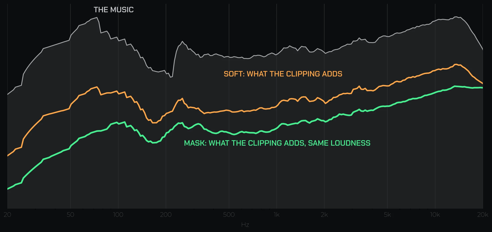
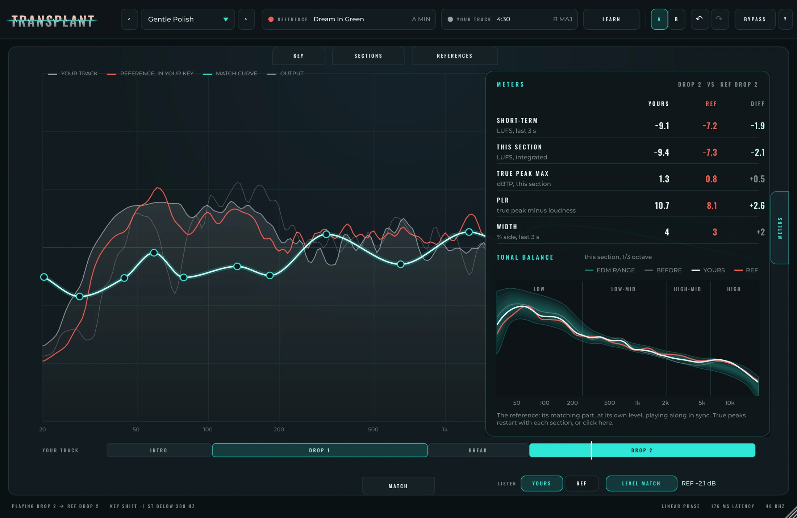

Transparent
Lookahead · release: 4 ms · 60 ms / 600 ms
The cleanest, and the default. A release that follows the music.
Clean loudness
The last plugin on your master. FLATLINE pushes a mix as loud as it will go and keeps it clean. Its MASK clipper moves the distortion to where the music itself covers it, so you can drive it far harder before you hear it. A lookahead limiter catches the rest and an upward compressor lifts the quiet parts. Set a loudness target, play the drop, press LEARN.
Free · Windows: .zip with the VST3 and the app · macOS: installer with AU, VST3 and the app, for Apple Silicon and Intel
User manual (PDF) Want them all? Get the full suite of 10
Overview
FLATLINE is a mastering limiter built for loudness. A plain limiter does all the work in one place, and pushed hard it starts to pump and smear. FLATLINE spreads the work: TRANSIENTS sharpens the attacks first, the CLIPPER shaves the very tips of the peaks (MASK hides its distortion under the music), so the limiter behind it only has to catch what's left, and UPWARD lifts the quiet parts without touching the peaks. Each stage works a little, so the whole can go much further.
The display shows where the work happens: the output with the gain reduction hanging from the top, the clipped peaks marked on the ceiling, and the upward lift rising from the bottom. On the right, the loudness in LUFS, the highest true peak, how much punch is left and how clean the result is, plus how far Spotify, Apple Music, YouTube, Tidal and Deezer would turn the song down. Set a TARGET, let the loudest part play and press LEARN: FLATLINE sets the GAIN for you.
Good for
New in 1.1
Every clipper adds distortion. MASK decides where it goes.
A clipper shaves the peaks off the waveform, and whatever it shaves turns into distortion. With SOFT or HARD, that distortion lands wherever the maths puts it: a clipped kick or bass spreads crackle into the upper mids and highs, often right where the mix is quiet enough for you to hear it.
MASK works on the distortion itself. It looks at the music in short, overlapping slices, works out how much each band would cover up, the way your ear does (a loud sound hides quieter ones near it, especially just above it), and keeps the clipping distortion under that, band by band. Where the music is loud, the distortion may be bigger; where it's quiet, it's kept tiny.
When a peak can't be shaved without being heard, MASK still does the job: it allows a little more, step by step, always in the bands where it's least audible. So it's a clipper you can push much harder before it sounds distorted, and the limiter behind it barely has to work.

Under the hood
The sound passes through these stages in order.
The input level, smoothed so moving it never clicks.
Lifts what sits BELOW dB under the recent peaks, by up to AMOUNT.
A fast and a slow envelope; where the fast one jumps ahead (an attack), it is turned up.
SOFT or HARD: 4x oversampled, at the ceiling, always in the path (a pure delay when off). MASK: the clipping is reshaped in short overlapping slices so its distortion stays under what the music masks, band by band; it joins the path only while it's on.
Lookahead, sample or true peak (8x) detection, a fast and a slow release blended by AUTO, and LINK between the sides.
TPDF dither at 24 or 16 bit, when it's on.
Quick start
Workflow
Set the sound first, then let LEARN set the level. This is the quickest way to a loud master that stays clean.
Reference
How hard the sound is pushed into FLATLINE: more GAIN, more loudness. Drag the tank up or down (Shift for fine steps), click its arrows for 0.1 dB, use the mouse wheel, or double-click for 0 dB.
The short-term loudness to aim for with LEARN, marked on the bar under SHORT-TERM.
Sets GAIN so the loudest moment of the last 10 seconds hits TARGET, then checks once more. Reads CALIBRATING until it has heard enough; see the workflow.
How the limiter moves: its lookahead and the release AUTO uses. See Styles.
The highest the output may go. You can also drag the line on the display.
How fast the limiter lets go. Only used with AUTO off.
STYLE picks a fast and a slow release and blends them with the music: fast on short peaks, slow on long, loud passages.
How much the two sides are limited together. 100% keeps the stereo image still; lower is a little louder but can move the image on hard peaks.
Turns up the attack of each hit (up to +8 dB) before the clipper and limiter, so drums keep their snap when you push hard. Costs a little loudness.
Turns the upward compressor on.
The most the quiet parts are lifted. The peaks aren't touched.
How far under the recent peaks a sound has to be to count as quiet. Closer to −6 lifts more of the music.
Turns the clipper on. It sits before the limiter and clips at the ceiling.
How hard the sound hits the clipper. The more it takes, the less the limiter has to.
SOFT rounds the tips off; HARD cuts them flat, crisper and more aggressive (both 4x oversampled). MASK moves the clipping distortion to where the music hides it: the cleanest at high DRIVE, with about 21 ms of extra latency while it's on. See MASK above.
The untouched sound, turned to the same loudness as FLATLINE's output, so you judge the sound and not the volume.
Plays only what the clipper and limiter remove. If it sounds like the music, they are working too hard.
The two views of the display.
Pop-up explanations when you hover over a control. Remembered for every project.
Sample peak limits the samples themselves: louder. True peak (8x) also catches the peaks between samples, so the track stays under the ceiling after MP3 and streaming encoders.
How far ahead the limiter looks. Auto uses the STYLE's. Shorter is punchier and louder, longer is cleaner. The latency stays the same.
Adds dither for the bit depth you export to. Only when FLATLINE is the last plugin before a fixed-point export.
The loudness over the last 3 seconds.
The loudness of everything played since the last reset, as streaming services measure it. Click the box to reset.
The highest true peak since the last reset. Amber when it's over the ceiling in sample peak mode (expected), red in true peak mode.
What the limiter and the clipper take off and what UPWARD adds, right now.
TP MAX minus INTEGRATED: how much room the peaks still have above the loudness. Below about 6 dB, a master starts to sound squashed.
How close the output is to the sound before the clipper and limiter, over the last 3 seconds. 100% is untouched. It counts every change, heard or not, so MASK reads lower than SOFT while sounding cleaner.
How many dB each service would turn the song down from its INTEGRATED loudness.
Every plugin window scales from 60% to 200%: drag the bottom-right corner. Double-click a knob to return it to its default.
Styles
STYLE sets how the limiter moves: how far it looks ahead and the releases AUTO blends.
Lookahead · release: 4 ms · 60 ms / 600 ms
The cleanest, and the default. A release that follows the music.
Lookahead · release: 2 ms · 25 ms / 350 ms
A shorter lookahead lets the front of each hit through, and a fast release brings it back. Livelier, a little louder.
Lookahead · release: 1.5 ms · 12 ms / 200 ms
Quick in, quick out. The loudest and thickest; listen for distortion on bass.
Lookahead · release: 5 ms · 120 ms / 900 ms
A long lookahead and a slow release. The least distortion; gentle on acoustic and dynamic music.
Presets
Every preset starts with GAIN at 0, so you set the loudness yourself (or with LEARN). TARGET is set to the loudness in the preset's name. Your own settings are saved with the project.
Tips
Install
Open the downloaded .zip. Inside is the plugin (.vst3) and a standalone app.
Move the .vst3 to C:\Program Files\Common Files\VST3. Every Windows DAW looks there.
Let your DAW scan for new plugins. The plugin shows up under Noise Division.
Windows 10 or 11, 64-bit. VST3 host or the standalone app.
Double-click the .pkg. It installs the Audio Unit, the VST3 and the standalone app.
Open System Settings, Privacy & Security, scroll down and click Open Anyway. This shows once, because the installers aren't from the App Store.
Logic and GarageBand find the AU on their next start. Ableton Live, FL Studio, Reaper, Bitwig and Studio One use the VST3.
macOS 10.13 or newer, Apple Silicon or Intel. AU or VST3 host, or the standalone app.
Installation, every control, modes, presets, tips and troubleshooting in one PDF to keep next to your DAW.
Help
Lower GAIN or CLIPPER DRIVE, or switch the clipper to SOFT. Dense and short lookaheads are the most aggressive: try Transparent or Safe. DELTA lets you hear exactly what's being removed.
The release is too fast for the material. Turn AUTO on, or choose a longer RELEASE, or the Safe style.
It needs about 10 seconds of the song playing with no setting changing. Automating a FLATLINE control restarts it all the time; stop the automation while you learn. You can click before the bar is full, after a second or so of audio.
TARGET is louder than 20 dB of GAIN can reach. Turn on the CLIPPER or raise its DRIVE, or lower TARGET.
In sample peak mode that is expected: it limits the samples, not the peaks between them. For a guaranteed ceiling, switch ADVANCED to true peak.
Your DAW should compensate FLATLINE's 7 ms (28 ms with MASK). If it doesn't (some live or low-latency modes), turn that mode off, or use SOFT or HARD.
Expected: MASK changes FLATLINE's latency, so it fades out and back in (about 40 ms) while your DAW re-aligns. Set the mode before you bounce, not during.
Check the .vst3 is in C:\Program Files\Common Files\VST3 (Windows) and rescan. On a Mac, run the installer again and restart the DAW.
Rescan with Verify plugins ticked in the plugin manager.
System Settings, Privacy & Security, Open Anyway. The installers aren't signed with an Apple developer certificate yet.
Click More info, then Run anyway. This only concerns the standalone app.
Drag the bottom-right corner. Every plugin scales from 60% to 200% and remembers the size.
E-mail noisedivision@proton.me with the plugin name, version, your DAW and your operating system.
More from Noise Division

Harmonic loudness

Multiband distortion

Spectral distortion

One-knob darkener

Precision sidechain

Spectral compressor

Soft clipper

Section-aware match EQ

One-knob mastering
Support
Everything here is free and stays free. If a plugin made it into your tracks and you want to say thanks, a donation pays for the time that goes into new plugins and updates.